Tofaktorautentisering (2FA) har blitt en kritisk sikkerhetskomponent for regnskapsførere og økonomipersonell som håndterer sensitive finansielle data. I en tid hvor cybertrusler rettet mot regnskapssystemer øker dramatisk, fungerer 2FA som et ekstra sikkerhetslag som beskytter både regnskapsdata og kundefordringer. Implementering av tofaktorautentisering er ikke bare en teknisk sikkerhetstiltak, men en forretningsmessig nødvendighet for å sikre internkontroll og beskytte mot datatyveri som kan påvirke både balansen og årsregnskapet.
Seksjon 1: Grunnleggende om Tofaktorautentisering i Regnskap
Tofaktorautentisering representerer en fundamental sikkerhetsstrategi som kombinerer “noe du vet” (passord) med “noe du har” (mobiltelefon eller sikkerhetsnøkkel, f.eks. BankID) for å skape et robust forsvar mot uautorisert tilgang til regnskapssystemer.
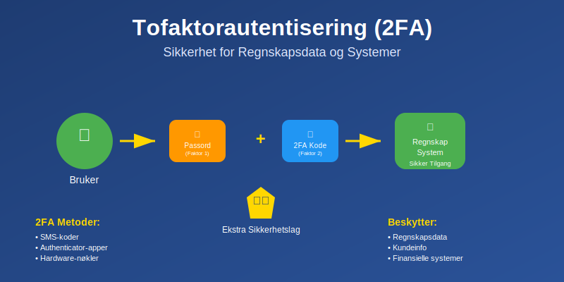
1.1 Hvorfor 2FA er Kritisk for Regnskapsføring
Regnskapssystemer inneholder ekstremt sensitiv informasjon som krever maksimal beskyttelse:
- Finansielle transaksjoner og kontantstrømdata
- Kundedata og debitorinformasjon
- Lønnsdata og personalinformasjon
- Skattedata og MVA-rapporter
- Banker og likviditetsinformasjon
1.2 Regulatoriske Krav og Compliance
GDPR og personvernforordningen stiller strenge krav til databeskyttelse:
| Regulering | Krav til sikkerhet | Straff ved brudd |
|---|---|---|
| GDPR | “Appropriate technical measures” | Opptil 4% av årlig omsetning |
| Bokføringsloven | Sikker oppbevaring av regnskapsdata | Bøter og ansvar |
| Regnskapsloven | Dokumentasjonssikkerhet | Juridisk ansvar |
Cybersikkerhet i regnskap påvirker direkte:
- Revisjonsprosessen og kontroller
- Årsregnskaprapportering og troverdighet
- Kunde tillit og omdømmerisiko
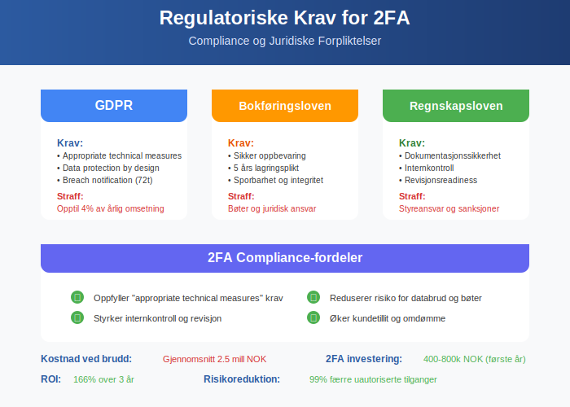
1.3 Kostnadene ved Sikkerhetsbrudd
Økonomiske konsekvenser av kompromitterte regnskapssystemer:
Direkte kostnader:
- Datarecovery og systemgjenoppretting: 500.000 - 2.000.000 kr
- Juridiske kostnader og compliance-bøter: 200.000 - 5.000.000 kr
- Tapet arbeidstime under systemnedetid: 50.000 - 500.000 kr/dag
Indirekte kostnader:
- Omdømmetap og kundeflukt
- Tap av konkurransefortrinn
- Økte forsikringspremier for cyberforsikring
- Regulatorisk innsyn og økt kontrollaktivitet
Seksjon 2: Tekniske Implementeringer av 2FA
2.1 SMS-basert Autentisering
SMS 2FA er den mest utbredte formen, men har kjente sårbarheter:
Fordeler:
- Enkel implementering for brukere
- Lav kostnad for organisasjoner
- Bred kompatibilitet med alle mobiltelefoner
Ulemper og risikoer:
- SIM-swapping angrep hvor angriper overtar telefonnummer
- SMS-intercepting via SS7-protokoll sårbarheter
- Nettverksavhengighet kan hindre tilgang
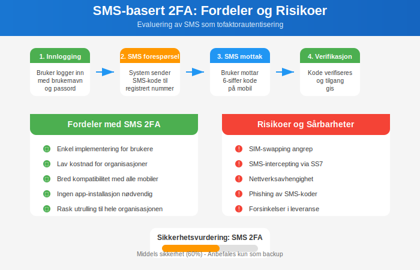
2.2 App-baserte TOTP (Time-based One-Time Password)
Authenticator-apper som Google Authenticator, Microsoft Authenticator genererer koder lokalt:
Teknisk funksjonalitet:
TOTP = HOTP(K, T)
hvor:
K = delt hemmelig nøkkel
T = tidsstempel (vanligvis 30-sekunders vinduer)
Fordeler:
- Offline-funksjonalitet - ikke avhengig av internett
- Høyere sikkerhet enn SMS
- Standardisert (RFC 6238) på tvers av plattformer
Implementering i regnskapssystemer:
| System | Native støtte | Integrasjonskrav |
|---|---|---|
| SAP | Ja | SSO-konfigurering |
| Oracle NetSuite | Ja | Admin-aktivering |
| QuickBooks | Delvis | Tredjepartsløsning |
| Visma | Ja | Brukerinnstillinger |
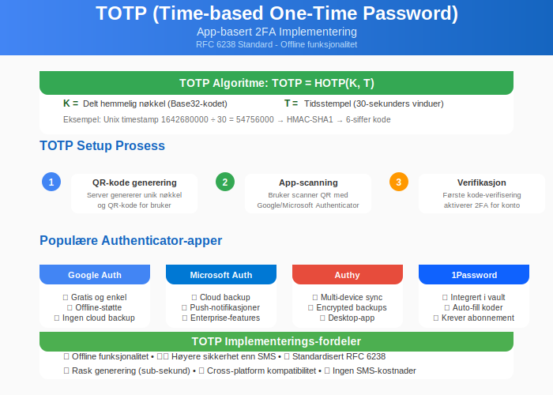
2.3 Hardware-baserte Sikkerhetsnøkler
FIDO2/WebAuthn representerer neste generasjon autentisering:
YubiKey og lignende enheter:
- Kryptografisk sikkerhet med public-key infrastructure
- Phishing-resistent - umulig å kopiere eller avlede
- USB, NFC, eller Bluetooth tilkobling
Fordeler for regnskapsvirksomheter:
- Høyeste sikkerhetsnivå for sensitive transaksjoner
- Enkel brukeropplevelse - bare plugge inn og trykke
- Sentralisert administrasjon for IT-ansvarlige
- Compliance-ready for strengeste reguleringer
Kostnadsanalyse hardware-nøkler:
Initial kostnad: 300-800 kr per ansatt
Årlig drift: 50-150 kr per ansatt
Total kostnad over 3 år: 450-1.250 kr per ansatt
Sammenligning med kostnaden av ett sikkerhetsbrudd:
Gjennomsnittlig brudd: 2.5 millioner kr
ROI på 2FA: 2.000-5.000% over 3 år
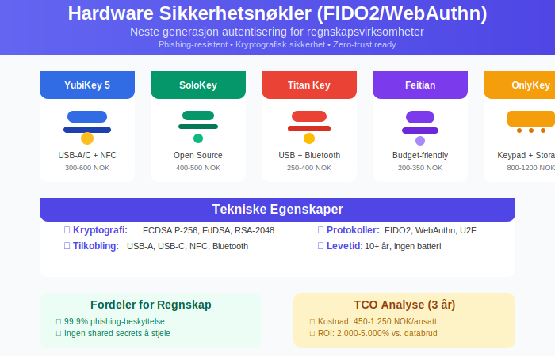
2.4 Biometrisk Autentisering
Fingeravtrykk, ansiktsgjenkjenning og irisscanning blir stadig mer utbredt:
Implementering i regnskapsmiljøer:
- Windows Hello for Business - integrert med Active Directory
- TouchID/FaceID - for Mac-baserte regnskapssystem
- Mobilbasert biometri - kombinert med app-2FA
Personvern og GDPR-betraktninger:
- Biometriske data klassifiseres som særlige kategorier av personopplysninger
- Krav til samtykke og databehandleravtaler
- Lokal lagring anbefales fremfor sentral database
Seksjon 3: Integrasjon med Regnskapssystemer
3.1 Enterprise Resource Planning (ERP) Systemer
Moderne ERP-systemer har ofte innebygd 2FA-støtte:
SAP implementering:
Transaksi: SAML_CONFIG
1. Konfigurer identity provider (IdP)
2. Aktiver MFA i SAP Cloud Identity
3. Tildel brukere MFA-krav basert på rolle
4. Test med regnskapsmoduler (FI/CO)
Oracle NetSuite:
- Role-based access med 2FA-krav per funksjon
- API-integrasjon for tredjeparty autentiseringsløsninger
- Audit logs for sporbarhet av sikkerhetshendelser
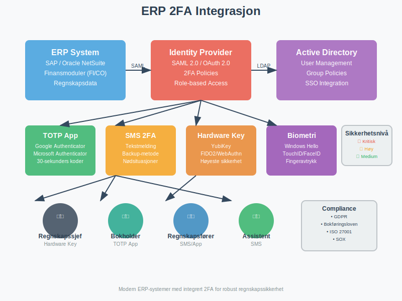
3.2 Skybaserte Regnskapsløsninger
Software-as-a-Service (SaaS) regnskapsplattformer:
Implementeringsstrategi:
| Plattform | 2FA-typer | Administrativ kontroll |
|---|---|---|
| Xero | SMS, App, Email | Admin kan kreve for alle |
| QuickBooks Online | SMS, App | Per bruker-aktivering |
| FreshBooks | SMS, App | Standard for alle planer |
| Wave | SMS | Gratis funksjon |
Single Sign-On (SSO) integrasjon:
- SAML 2.0 for enterprise-kunder
- OAuth 2.0 for API-tilgang
- Active Directory synkronisering for intern brukerstyring
3.3 Banker og Finansielle Tjenester
Open Banking og PSD2-direktivet krever sterke kundeautentisering (SCA):
BankID og Vipps integrering:
- Automatisk avstemming av banktransaksjoner
- Digital signering av faktura og kontrakter
- Compliance med norske bankreguleringer
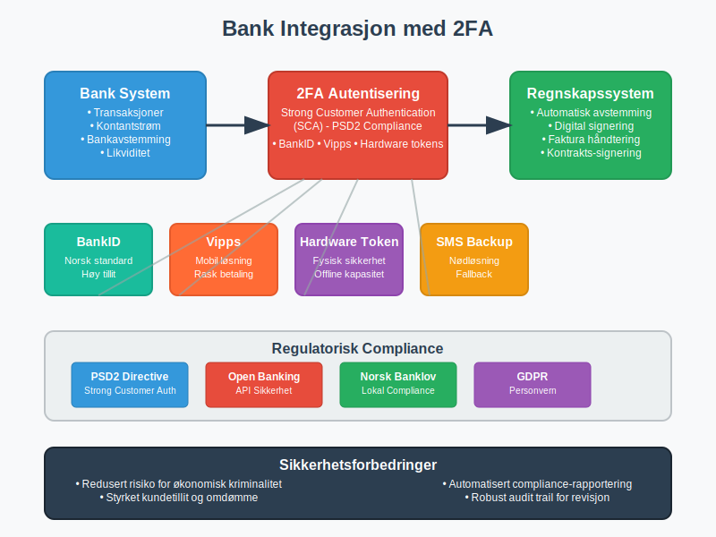
Seksjon 4: Organisatorisk Implementering
4.1 Sikkerhetspolicy og Retningslinjer
Utvikling av 2FA-policy for regnskapsvirksomheter:
Minimumsstandard:
Alle brukere med tilgang til:
- Finansielle rapporter og [resultatregnskap](/blogs/regnskap/hva-er-resultatregnskap "Hva er Resultatregnskap? Oppbygning og Analyse")
- [Kundedata](/blogs/regnskap/hva-er-kunde "Hva er Kunde? Administrasjon og Regnskapsføring av Kunderelasjoner") og faktureringssystemer
- [Bankkontoer](/blogs/regnskap/hva-er-bankkonto "Hva er Bankkonto? Typer og Regnskapsføring av Bankkontoer") og betalingssystemer
- [Lønnssystemer](/blogs/regnskap/hva-er-loennsystem "Hva er Lønnssystem? Administrasjon og Integrering med Regnskap") og personaldata
SKAL bruke tofaktorautentisering.
Risikoklassifisering av brukere:
| Risikokategori | Brukertype | 2FA-krav |
|---|---|---|
| Kritisk | Regnskapssjef, controller | Hardware-nøkkel påkrevd |
| Høy | Regnskapsføre, bokholder | App eller SMS 2FA |
| Medium | Assistenter, konsulenter | SMS 2FA minimum |
| Lav | Lesertilgang, rapporter | Kan unntas |
4.2 Opplærings- og Awarenessprogrammer
Effektiv 2FA implementering krever omfattende brukeropplæring:
Opplæringsmoduler:
- Trusselbilde og risiko for regnskapsbransjen
- Praktisk bruk av 2FA-verktøy i daglige arbeidsflyt
- Troubleshooting og support-prosedyrer
- Phishing recognition og sociale ingenieuring
Awareness-kampanjer:
- Månedlige phishing-tester med regnskapsspesifikke scenarios
- Cybersikkerhets-workshops for regnskapspersonell
- Incident response øvelser og tabletop-simuleringer
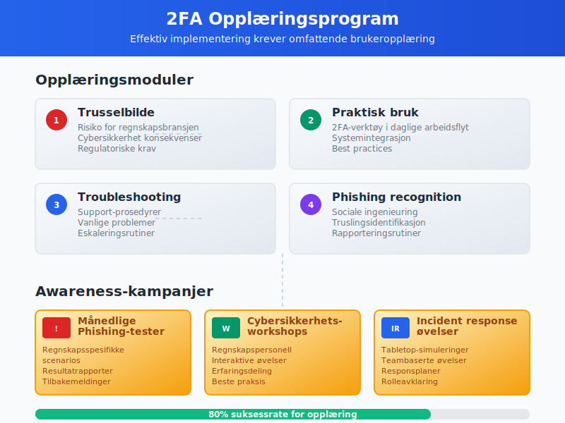
4.3 Change Management og Brukeradopsjon
Overgang til 2FA kan møte motstand fra erfarne regnskapsførere:
Suksessfaktorer:
- Gradvis utrulling - start med kritiske systemer
- Champion-program - identifiser teknologi-positive medarbeidere
- Insentiver for tidlig adopsjon og god compliance
- Support-desk med regnskapsspesifikk kompetanse
Vanlige utfordringer og løsninger:
| Utfordring | Symptom | Løsning |
|---|---|---|
| Motstand mot endring | “Dette tar for lang tid” | Demonstrer tidsbesparelse ved sikkerhet |
| Teknisk kompleksitet | “Jeg forstår ikke teknologien” | Forenklet opplæring og visuelle guider |
| Produktivitetstap | “Dette hindrer mitt arbeid” | Optimalisere arbeidsflyt og automasjon |
Seksjon 5: Avanserte Sikkerhetsaspekter
5.1 Zero Trust Architecture
Zero Trust modellen blir stadig viktigere for regnskapsvirksomheter:
Prinsipper for regnskapssikkerhet:
- Never trust, always verify - autentiser hver transaksjon
- Least privilege access - minimum nødvendige tilganger
- Microsegmentation - isoler kritiske regnskapssystemer
- Continuous monitoring - sanntidsovervåking av brukeraktivitet
Implementering i regnskapskontekst:
Tradisjonell modell:
Bruker inne på nettverket → Tilgang til alle regnskapssystemer
Zero Trust modell:
Bruker autentisert → Tilgang vurdert per system
→ Kontinuerlig verifisering av aktivitet
→ Automatisk utlogging ved mistenksom atferd
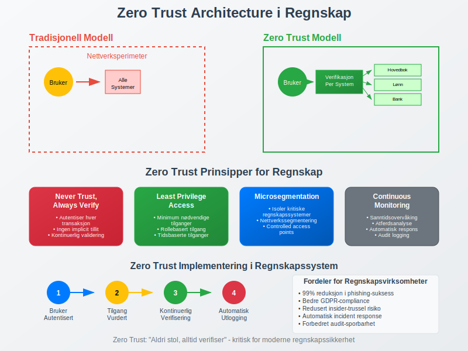
5.2 Adaptive Authentication
AI-drevne sikkerhetssystemer kan tilpasse 2FA-krav basert på risiko:
Risikoparametere for regnskapsbruk:
- Geografisk lokasjon - unormale innloggingssted
- Enhetstilgang - ukjente datamaskiner eller mobilenheter
- Tidsperioder - innlogging utenfor arbeidstid
- Atferdsmønstre - uvanlige transaksjonsvolum eller -typer
Eksempel på adaptiv regel:
IF (innlogging utenfor Norge
AND tilgang til banksystemer
AND utenfor arbeidstid)
THEN krev hardware-nøkkel + manager-godkjenning
5.3 Backup og Business Continuity
2FA-systemer kan også feile - kontinuitetsplanlegging er kritisk:
Backup-autentiseringsmetoder:
- Recovery codes - engangskoder for nødstilfeller
- Backup hardware-nøkler - lagret sikkert off-site
- Administrativ override - kun for kritiske regnskapsfrister
- Telefonbasert verifisering - manuell prosess for nødstilfeller
Business continuity scenario:
Scenario: Hovedkontor ødelegges av brann
- Kritisk: [Månedsavslutning](/blogs/regnskap/hva-er-manedsavslutning "Hva er Månedsavslutning? Prosess og Kontroller") må fullføres
- Løsning: Remote work med mobile 2FA-enheter
- Backup: Cloud-baserte regnskapssystem med offline backup codes
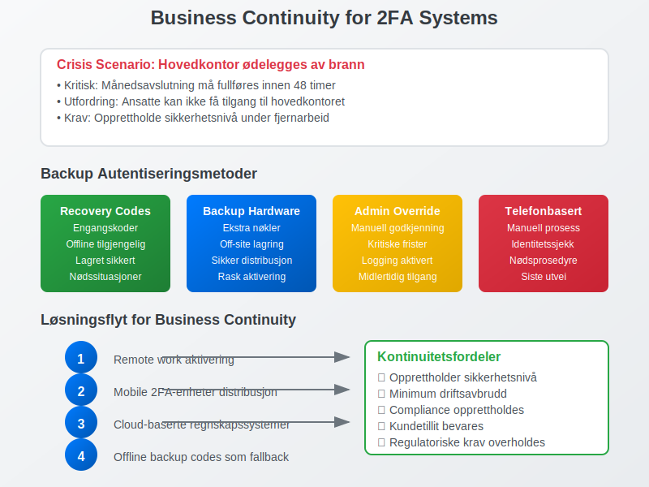
Seksjon 6: Bransje- og Sektorspesifikke Implementeringer
6.1 Revisionsfirmaer og Autoriserte Regnskapsførere
Revisionsfirmaer håndterer flere kunders finansielle data:
Multitenant sikkerhetstilnærming:
- Kundespesifikke 2FA-krav per oppdragsnivå
- Segregering av kundedata med separate autentiseringsdomener
- Audit trail for alle tilganger på tvers av kundeporteføljer
- Partner-tilgang med høyere sikkerhetskrav
Regulatory compliance for revisorer:
| Standard | 2FA-krav | Dokumentasjonskrav |
|---|---|---|
| ISA 315 | Risikoevaluering av IT-systemer | Dokumenter 2FA-implementering |
| ISAE 3402 | Kontroller hos tjenesteleverandører | Tester 2FA-effektivitet |
| International Standards on Auditing | IT-generelle kontroller | Vurder 2FA som kontrollaktivitet |
6.2 Offentlig Sektor og Kommunal Regnskapsføring
Offentlige virksomheter har særlige sikkerhetskrav:
Nasjonale sikkerhetsrammeverk:
- NSM Grunnprinsipper for informasjonssikkerhet
- Nasjonal sikkerhetsmyndighet klassifisering av data
- GDPR for persondata i kommunale systemer
- Arkivloven for langtidslagring av autentiseringslogger
Spesielle implementeringskrav:
- Nasjonal ID-løsninger - ID-porten integrering
- Qualified electronic signatures for formal documenter
- Compliance med offentlige anskaffelser
- Transparency og offentlig innsyn i sikkerhetspraksis
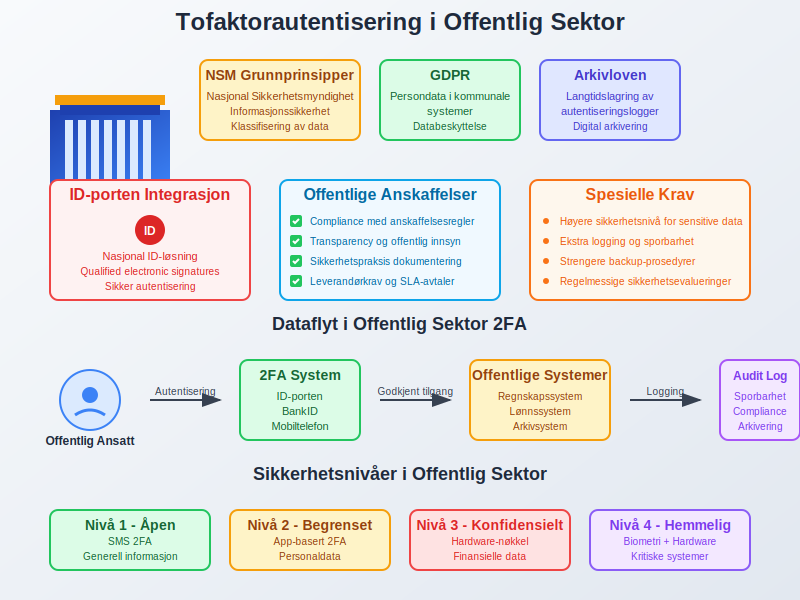
6.3 Internasjonale Konsern og Datterselskap
Multinasjonale regnskapsvirksomheter møter komplekse jurisdiksjonelle krav:
Cross-border datautveksling:
- EU GDPR vs. California CCPA vs. norsk personvernlov
- Data residency krav - hvor 2FA-logger kan lagres
- Transfer impact assessments for 2FA-systemer med tredjelandskomponenter
Sentralisert vs. distribuert 2FA-administrasjon:
| Tilnærming | Fordeler | Utfordringer |
|---|---|---|
| Sentralisert | Enhetlig policy, kostnadseffektivt | Lokale regulatoriske konflikter |
| Distribuert | Lokal compliance, fleksibilitet | Kompleks administrasjon, inkonsistens |
| Hybrid | Balansert tilnærming | Krever sofistikerte systemer |
Seksjon 7: Teknologiske Trender og Fremtiden
7.1 Passwordless Authentication
Eliminering av passord representerer neste evolusjonssteg:
FIDO2 og WebAuthn:
- Public key cryptography erstatter shared secrets
- Device-bound autentisering forhindrer credential stuffing
- User experience forbedres dramatisk med biometri
- Phishing immunity - umulig å lure til falske sider
Implementering for regnskapsystem:
Tradisjonell: Brukernavn + Passord + 2FA-kode
Passwordless: Hardware-nøkkel eller biometri → direkte tilgang
Fordeler:
- Redusert support-overhead (ingen glemt passord)
- Høyere sikkerhet (ingen passord å stjele)
- Bedre brukeropplevelse (raskere innlogging)
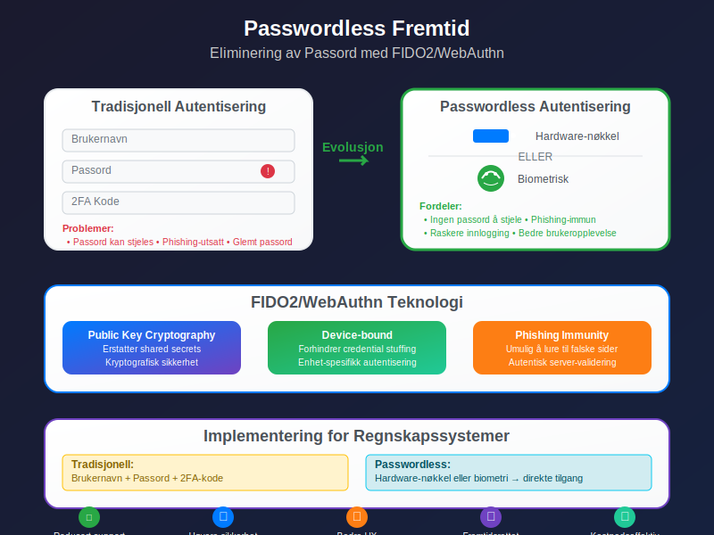
7.2 Blockchain og Distributed Identity
Decentralized Identity (DID) kan revolusjonere regnskapssikkerhet:
Blockchain-basert autentisering:
- Self-sovereign identity - brukere kontrollerer sine egne credentials
- Verifiable credentials - tamper-proof identity assertions
- Interoperability på tvers av regnskapssystemer og jurisdiksjoner
- Privacy-preserving - zero-knowledge proofs for sensitive data
Potensielle anvendelser:
- Revisor-credentials verificeret via blockchain
- Cross-border regnskapssamarbeid med kryptografisk trust
- Audit trails som ikke kan manipuleres
- Smart contracts for automatiserte compliance-sjekker
7.3 Quantum Computing og Post-Quantum Cryptography
Quantum computers truer dagens kryptografiske metoder:
Tidslinje og impact:
- 2030-2035: Første kommersielle quantum computers
- 2035-2040: Trussel mot RSA og elliptic curve cryptography
- 2025-2030: Overgang til quantum-safe algoritmer må starte
Forberedelser for regnskapsbransjen:
| Område | Nåværende risiko | Quantum-safe migrering |
|---|---|---|
| 2FA hardware | Moderat | FIDO2 med post-quantum algoritmer |
| PKI certificates | Høy | Hybrid classical-quantum certificates |
| Database encryption | Høy | AES-256 + quantum-safe key exchange |
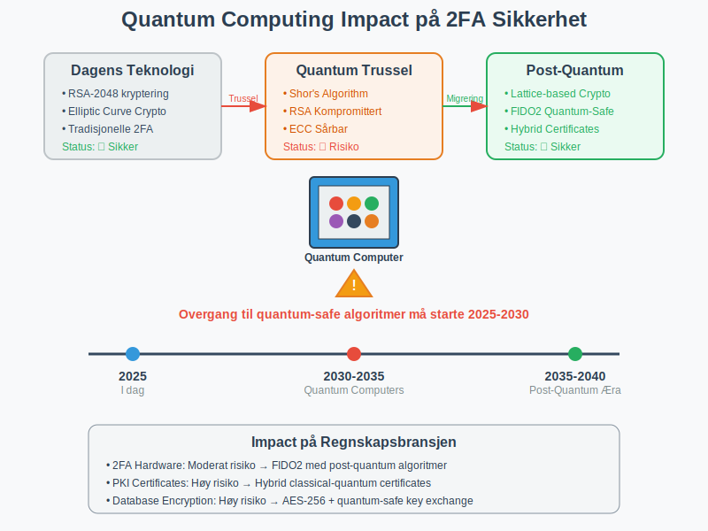
Seksjon 8: Kostnads-Nytte Analyse
8.1 Total Cost of Ownership (TCO)
Realistisk kostnadsmodell for 2FA-implementering i regnskapsvirksomheter:
Initialkostnader (første år):
Programvare og lisenser:
- Enterprise 2FA-løsning: 200-500 kr/bruker/år
- Hardware-nøkler: 300-800 kr/bruker (engangsutgift)
- Systemintegrasjon: 50.000-200.000 kr
Implementeringskostnader:
- Konsulentbistand: 100.000-300.000 kr
- Intern arbeidstid: 200-400 timer × timelønn
- Opplæring: 50.000-150.000 kr
Total for 50 ansatte: 400.000-800.000 kr første år
Løpende årlige kostnader:
Drift og vedlikehold:
- Lisenser: 10.000-25.000 kr/år
- Support: 20.000-50.000 kr/år
- Administrativ overhead: 40.000-80.000 kr/år
Total årlig: 70.000-155.000 kr/år
8.2 Return on Investment (ROI)
Kvantifiserbare besparelser fra 2FA-implementering:
Reduksjon i sikkerhetstrusler:
| Trusseltype | Uten 2FA (sannsynlighet) | Med 2FA (sannsynlighet) | Kostnadssparing |
|---|---|---|---|
| Password stuffing | 15% årlig | 0.1% årlig | 99.3% reduksjon |
| Phishing-angrep | 8% årlig | 0.5% årlig | 93.8% reduksjon |
| Insider threats | 3% årlig | 1% årlig | 66.7% reduksjon |
Beregnet ROI over 3 år:
Investeringskostnad: 800.000 kr (første år) + 310.000 kr (år 2-3)
Total kostnad: 1.110.000 kr
Forhindrede sikkerhetsbrudd:
- Stor incident (2.5 mill kr): 99% mindre sannsynlighet = 2.475.000 kr besparelse
- Middels incident (500.000 kr): 95% mindre sannsynlighet = 475.000 kr besparelse
Total besparelse: 2.950.000 kr
ROI: (2.950.000 - 1.110.000) / 1.110.000 = 166%
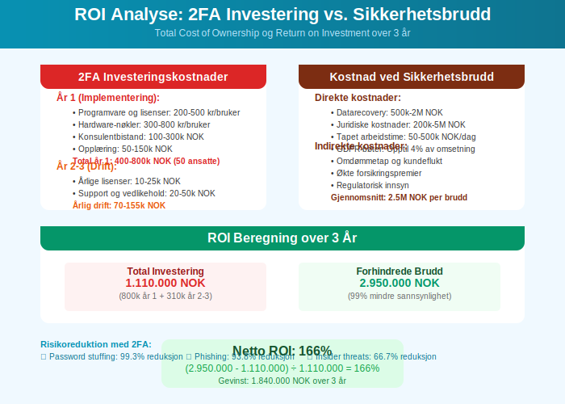
8.3 Produktivitetsanalyse
Balanse mellom sikkerhet og arbeidsflyt er kritisk:
Produktivitetstap (første 6 måneder):
- Innlæringskurve: 5-10 minutter ekstra per dag per bruker
- Tekniske problemer: 2-4 support-henvendelser per bruker
- Brukerfrustrasjon: Midlertidig reduksjon i arbeidseffektivitet
Produktivitetsgevinster (etter 6+ måneder):
- Reduserte passord-reset: 80% færre henvendelser til IT-support
- Mindre downtime: Færre sikkerhetsincidenter som stopper arbeid
- Forbedret tillit: Høyere kundetilfredshet grunnet sikkerhet
Netto produktivitetseffekt:
År 1: -5% produktivitet (implementeringsfase)
År 2: +2% produktivitet (reduserte support-kostnader)
År 3+: +3% produktivitet (optimaliserte arbeidsflyter)
Seksjon 9: Implementeringsstrategi
9.1 Fase-basert Utrulling
Strukturert tilnærming minimerer risiko og maksimerer suksess:
Fase 1: Pilot og kritiske systemer (Måned 1-3)
- Velg 5-10 testbrukere fra forskjellige avdelinger
- Implementer på mest kritiske systemer (bank, lønn, hovedbok)
- Dokumenter utfordringer og optimaliseringer
- Utvikle endelige prosedyrer basert på erfaringer
Fase 2: Utvidet implementering (Måned 4-6)
- Utrull til alle regnskapsføre og økonomipersonell
- Inkluder sekundære systemer (CRM, dokumenthåndtering)
- Opprett support-rutiner og FAQ-ressurser
- Monitorer compliance og använding
Fase 3: Full organisasjonsdekning (Måned 7-12)
- Inkluder alle ansatte med systemtilgang
- Implementer alle systemer inkludert mindre kritiske
- Fininnstill policyer og prosedyrer
- Planlegg fremtidig oppgraderinger og forbedringer
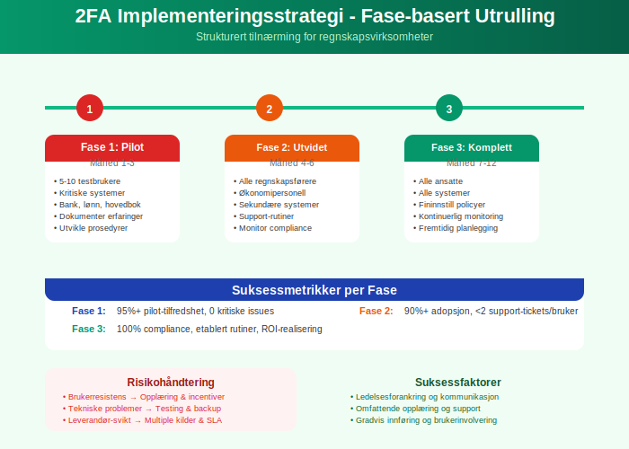
9.2 Prosjektledelse og Governance
Suksessfulle 2FA-prosjekter krever strukturert ledelse:
Prosjektorganisasjon:
| Rolle | Ansvar | Tidstilskudd |
|---|---|---|
| Prosjektleder | Overordnet koordinering | 50% i 12 måneder |
| IT-sikkerhetsansvarlig | Teknisk implementering | 100% i 6 måneder |
| Regnskapssjef | Krav og kvalitetssikring | 20% i 12 måneder |
| Change manager | Organisasjonsendring | 30% i 12 måneder |
Styringsstruktur:
- Styringsgruppe: Ukentlige møter første 3 måneder
- Arbeidsgruppe: Daglig koordinering under implementering
- Brukerrepresentanter: Feedback og testing av løsninger
- Leverandør-kontakt: Teknisk support og eskalering
9.3 Risikohåndtering
Proaktiv risikostyring forhindrer implementeringsproblemer:
Risikoregister:
| Risiko | Sannsynlighet | Impact | Mitigering |
|---|---|---|---|
| Brukerresistens | Høy | Medium | Omfattende opplæring og incentiver |
| Tekniske problemer | Medium | Høy | Grundig testing og backup-løsninger |
| Leverandør-svikt | Lav | Høy | Multiple leverandører og SLA-avtaler |
| Regulatorisk endring | Medium | Medium | Løpende monitoring av compliance-krav |
Contingency planning:
Plan A: Primær 2FA-løsning med TOTP-apper
Plan B: Fallback til SMS-basert 2FA
Plan C: Midlertidig administrativ godkjenning
Plan D: Offline-arbeid med ettersynkronisering
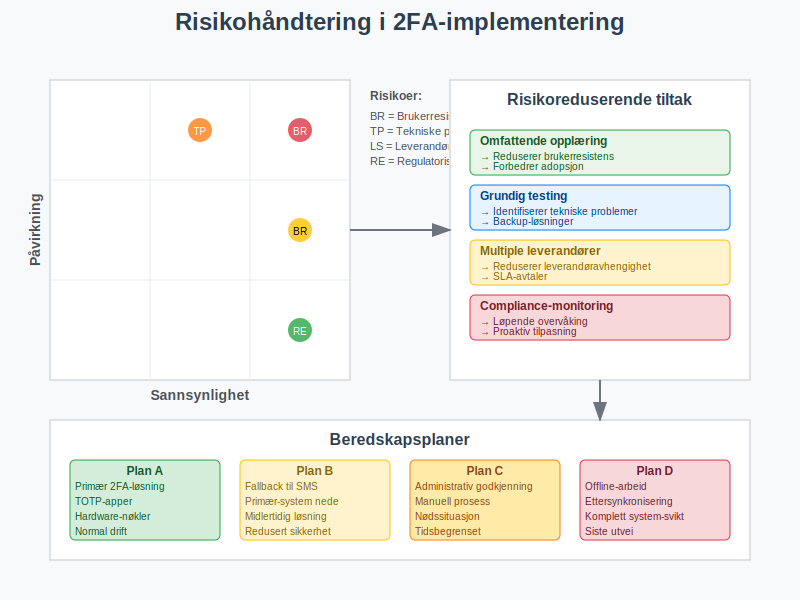
Seksjon 10: Monitoring og Kontinuerlig Forbedring
10.1 Key Performance Indicators (KPIs)
Målbare resultater for 2FA-suksess:
Sikkerhetsmålinger:
| KPI | Måleverdi | Målefrekvens |
|---|---|---|
| Suksessrate for innlogging | >98% | Daglig |
| Gjennomsnittlig innloggingstid | <30 sekunder | Ukentlig |
| Phishing-test resultater | <5% fall for falske e-poster | Månedlig |
| Sikkerhetsincidenter | 0 major, <2 minor per kvartal | Kontinuerlig |
Operasjonelle målinger:
- Support-henvendelser: <1 per bruker per måned
- Compliance-rate: 100% for kritiske systemer
- Training completion: 95% innen 3 måneder
- User satisfaction: >7/10 i tilfredshetsskor
10.2 Kontinuerlig Monitoring
Automated monitoring for sikkerhetshendelser:
SIEM-integrasjon:
Log Sources:
- 2FA authentication events
- Failed login attempts
- Device enrollment/changes
- Administrative actions
Analytics:
- Pattern recognition for abnormal behavior
- Geolocation analysis
- Time-based access patterns
- Volume-based alerting
Dashboard-komponenter:
- Real-time statusvisning av alle autentiseringssystem
- Trendanalyser for brukeradopsjon og compliance
- Incident tracking med automatisk eskalering
- Performance metrics for system-responstider
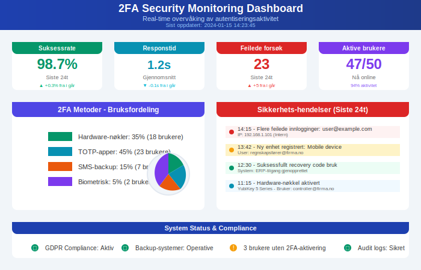
10.3 Årlig Review og Oppdatering
Systematisk evaluering sikrer løpende relevans:
Årlig sikkerhetsvurdering:
- Trussellandskap-analyse: Nye angrepstyper og sårbarheter
- Teknologi-evaluering: Nye 2FA-teknologier og standarder
- Compliance-review: Endringer i regulatoriske krav
- Kostnads-nytte oppdatering: ROI-realisering vs. prognoser
Oppgraderingsplan:
- Hardware-nøkler: 3-5 års utskiftingssyklus
- Software-systemer: Årlige større oppdateringer
- Policies og prosedyrer: Halvårlig review og justering
- Opplæringsprogrammer: Årlig oppdatering av innhold
Seksjon 11: Practical Implementation Guide
11.1 Teknisk Sjekkliste
Steg-for-steg implementeringsguide:
Pre-implementering (4-6 uker før):
- Inventar av systemer som krever 2FA
- Brukeranalyse og rollebasert tilgangstyring
- Leverandør-evaluering og kontrakt-forhandling
- Pilot-brukere identifisert og informert
- Backup-planer for continuity dokumentert
Teknisk setup (2-4 uker):
- Identity Provider konfigurert og testet
- Active Directory integration etablert
- SAML/OIDC konfigurert for alle systemer
- Mobile Device Management (MDM) setup
- Network segmentation for sikre Admin-tilganger
Testing og Quality Assurance (1-2 uker):
- Functional testing av alle autentiseringsflyter
- Performance testing under normal belastning
- Disaster recovery testing av backup-prosedyrer
- User acceptance testing med pilot-gruppe
- Security penetration testing av implementering
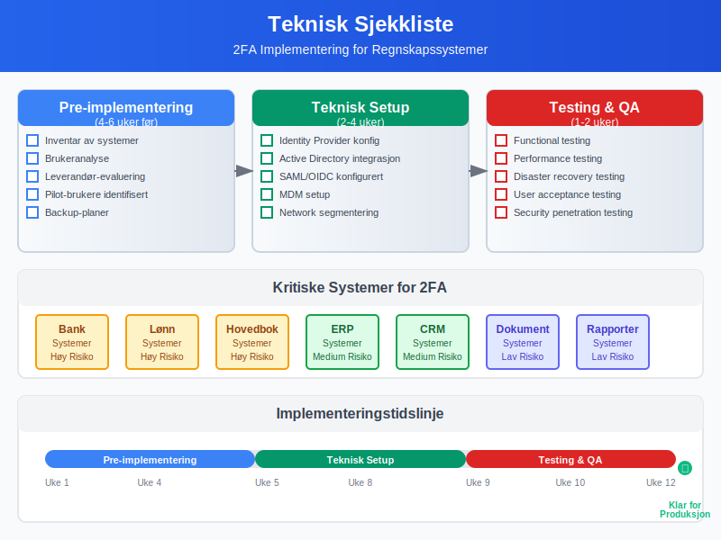
11.2 Organisatorisk Sjekkliste
Policy og prosedyre-dokumentasjon:
- Informasjonssikkerhetspolicy oppdatert med 2FA-krav
- Brukerinstruksjoner for hver 2FA-metode
- Incident response prosedyrer for 2FA-feil
- Onboarding/offboarding prosesser justert
- Compliance-dokumentasjon for revisorer
Opplæring og awareness:
- Opplæringsmateriell utviklet og testet
- Workshops planlagt og gjennomført
- Champions identifisert og trent
- Support-kanaler etablert og bemannet
- FAQ og self-service ressurser opprettet
Prosjektledelse:
- Milepælsplan med målbare leveranser
- Risiko og issue tracking system på plass
- Stakeholder kommunikasjon plan aktivert
- Budget tracking og cost control etablert
- Post-implementation review planlagt
11.3 Troubleshooting og Support
Vanlige problemer og løsninger:
Tekniske utfordringer:
| Problem | Symptom | Løsning |
|---|---|---|
| TOTP time skew | “Invalid code” feilmeldinger | Synkroniser enhet-tid med NTP-server |
| SMS-forsinkelser | Koder ankommer for sent | Implementer email backup eller switch til app |
| Hardware-nøkkel ikke gjenkjent | USB-enhet ikke detektert | Driver-oppdatering og browser-kompatibilitet |
| Nettverk-blokkering | 2FA-tjeneste ikke tilgjengelig | Firewall-konfigurasjon og proxy-setting |
Bruker-utfordringer:
- Glemt enhet: Backup codes og administrativ reset-prosedyre
- Defekt hardware: Replacement-nøkler og recovery-metoder
- Reiseproblemer: International roaming og alternative metoder
- Teknologi-angst: Ekstra support og forenklete instruksjoner
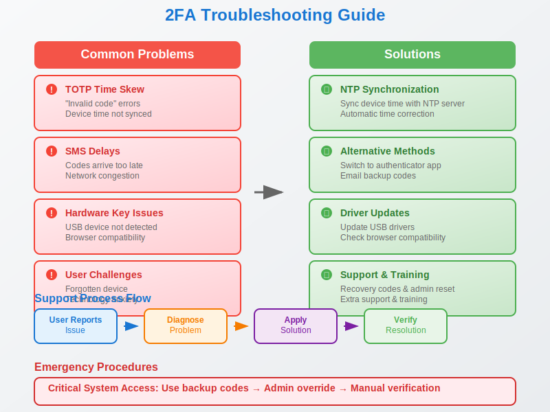
Konklusjon
Tofaktorautentisering representerer en fundamental sikkerhetskontroll som ikke lenger er valgfri for moderne regnskapsvirksomheter. I en verden hvor cybertrusler konstant øker i sofistikering og frekvens, fungerer 2FA som en kritisk forsvarsmekanisme som beskytter både regnskapsdataens integritet og organisasjonens omdømme.
Nøkkelinnsikter:
- Regulatorisk nødvendighet: GDPR og andre compliance-krav gjør 2FA til en praktisk obligatorisk investering
- Økonomisk gevinst: ROI på 166% over 3 år gjennom forhindrede sikkerhetsbrudd
- Teknologisk modenhet: Moderne løsninger tilbyr både høy sikkerhet og god brukeropplevelse
- Organisatorisk transformasjon: Vellykket implementering krever omfattende change management
Strategiske anbefalinger:
For regnskapsvirksomheter anbefales en hybrid tilnærming som kombinerer:
- Hardware-nøkler for kritiske brukere og systemer (regnskapssjef, controller)
- TOTP-apper for standard regnskapsføre og bokholdere
- SMS-backup for nødssituasjoner og mobilenheter
- Biometrisk autentisering på personal enheter når tilgjengelig
Fremtidsperspektiv:
Utviklingen mot passwordless authentication og zero trust architecture vil fortsette å forme regnskapsindustriens sikkerhetstilnærming. Organisasjoner som investerer i moderne 2FA-infrastruktur nå, posisjonerer seg optimalt for fremtidens quantum-safe sikkerhetslandskap og AI-drevne trusseldeteksjon.
Handlingsplan:
- Start med risikovurdering av eksisterende regnskapssystemer og dataflyt
- Implementer pilot-program med kritiske brukere og systemer
- Utvikl omfattende opplæringsstrategi for organisasjonsendring
- Etabler monitoring og continual improvement prosesser
- Planlegg for fremtidige teknologi-oppgraderinger og compliance-krav
Tofaktorautentisering er ikke bare en teknisk sikkerhetstiltak - det er en strategisk investering i regnskapsvirksomhetens langsiktige bærekraft, kundetillit og konkurranseposisjon. I en digitalisert økonomi hvor datasikkerhet er synonymt med virksomhetskontinuitet, representerer robust 2FA-implementering en kritisk suksessfaktor for moderne regnskapsføring.